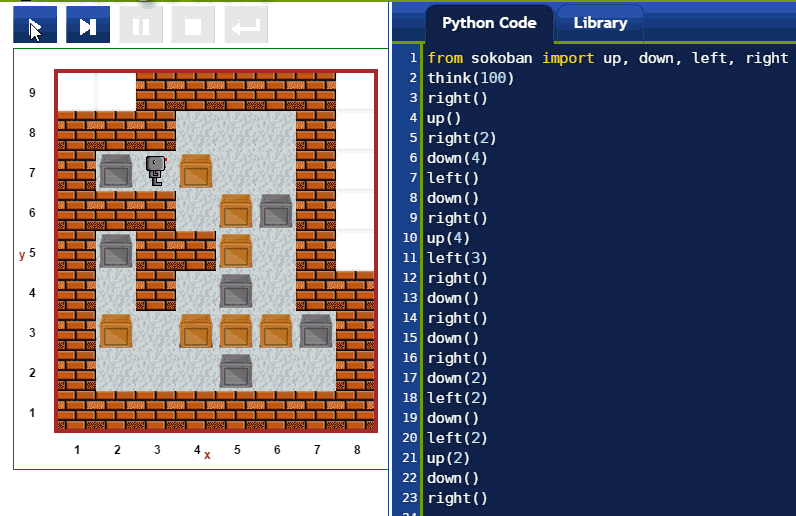
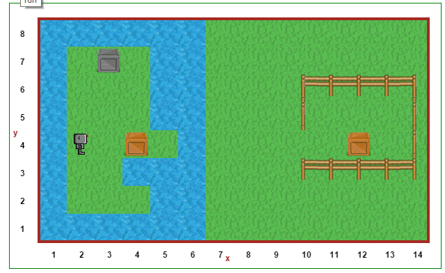

Warning
This document is in the middle of a major revision. Some sections might be missing text, or have French text as placeholder.

“Sokoban ani” by Carloseow at English Wikipedia. Licensed under CC BY 3.0 via Wikimedia Commons - http://en.wikipedia.org/wiki/Sokoban#/media/File:Sokoban_ani.gif
From http://en.wikipedia.org/wiki/Sokoban
The game is played on a board of squares, where each square is a floor or a wall. Some floor squares contain boxes, and some floor squares are marked as storage locations. The player is confined to the board, and may move horizontally or vertically onto empty squares (never through walls or boxes). The player can also move into a box, which pushes it into the square beyond. Boxes may not be pushed into other boxes or walls, and they cannot be pulled. The puzzle is solved when all boxes are at storage locations.
Reeborg’s World allows to solve Sokoban-like puzzles. However, instead of using the arrow keys to control Reeborg, one uses code telling Reeborg what to do. However, just like the original Sokoban, boxes may not be pushed into other boxes or walls. Unlike the original Sokoban, attempting to do so will make Reeborg complain and stop its program.

You can solve sokoban puzzles using only move() and turn_left() ...
but that would be extremely tedious. Furthermore, Reeborg’s oil leak would
make a mess of things. It is much better to import the functions
up(), down(), left(), and right() from the sokodan library
and use them: they behave like you would expect arrow keys would behave.
Furthermore, these functions take an integer as an optional argument,
indicating how many times you want this function to be repeated: this allow
to write much shorter programs.
Finally, when importing the sokodan library, Reeborg’s oil leak is automatically stopped.
Because boxes can be turned into bridges for Reeborg when they are pushed in water, different types of challenges can be made, which would be impossible to create with the original Sokoban.

Finally, one can think of adding ice tiles to make things a bit more slippery and challenging.
Sokoban type problems are logic problems which can be challenging to solve. From my own experimentation, they seem more difficult to solve using code than using traditional environment where arrow keys can be used to control the character. [Note to self: implement special mode with arrow key control and recording mode.]
They can be of interest to complete beginners, who have not learned yet
of control flow structures (if/elif/else/while/...) but want
to program a robot to do a difficult task.
Once a sokoban has been solved using the special sokoban functions
up(), down(), left(), right(), students may be asked to transform
this solution so as to make use only of move() and turn_left().
For experts only
The following will not make sense, unless you are an advanced programmer.
Sokoban puzzles can be solved using search techniques taught to advanced students. In order to be able to use such techniques, information about the world must be obtained by a program directly. Worlds are actually encoded as javascript object (only properties, no methods) which can be converted from json strings into Python dicts. If you run the following program, you will be able to see how whatever world is loaded is represented and how to transform its representation into a Python dict.
import json # very incomplete Brython module from browser import window # First, use the builtin JSON Javascript function as it can # show a nicely formatted representation of the world; # this should have been implemented in the Brython json module # but is currently missing. world_str = window.JSON.stringify(RUR.current_world, None, 2); print(world_str) # Convert the json world representation into a Python dict # using Brython's json module. world_dict = json.loads(world_str) # We can now use Python's standard notation for dicts and lists # to extract the required information. print(world_dict["robots"][0]["orientation"] == RUR.EAST)

{kind=link}